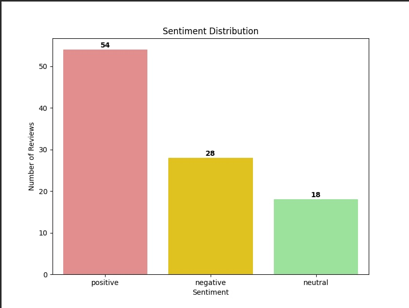
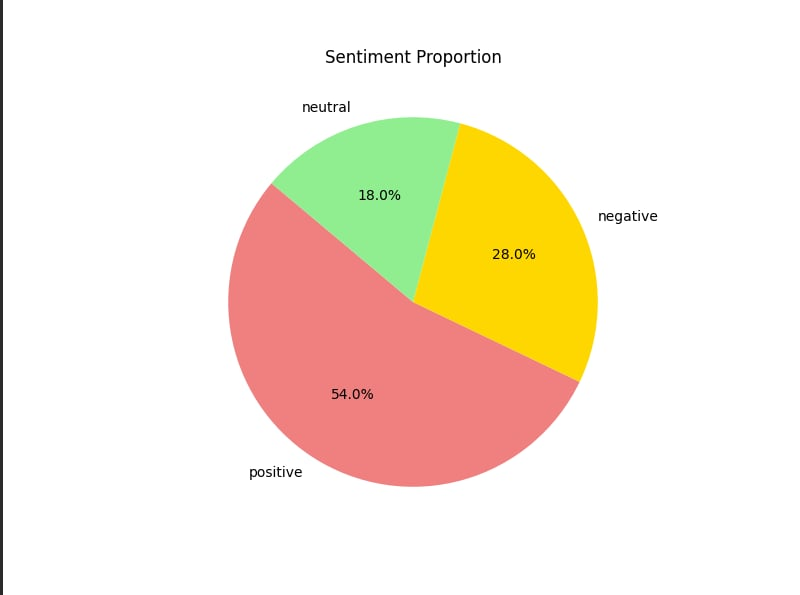
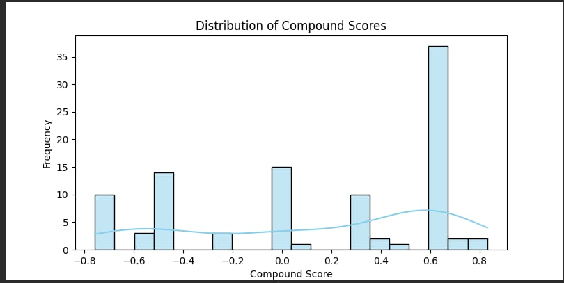

PYTHON • DATA PROCESSING
📊 Sentiment Analysis Pipeline
A simulated real-time text analytics pipeline that processes customer feedback and transforms it into sentiment insights and visualisations.
📌 About the Project
This project explored a simulated streaming workflow for customer feedback using Python. The pipeline processes text data, performs sentiment analysis, and produces visual summaries of the results.
The project was developed in two phases, beginning with a Jupyter Notebook prototype and later developing into a more structured Python pipeline.
📊 Results & Visualisations
Selected outputs from the Phase 2 pipeline after processing the larger simulated dataset.

Phase 2 — Sentiment Distribution
Bar chart showing the distribution of sentiment classifications in the larger dataset.

Phase 2 — Sentiment Proportions
Pie chart showing the proportion of positive, neutral, and negative feedback.

Phase 2 — Sentiment Score Distribution
Histogram showing the distribution of sentiment scores produced by the pipeline.

Sentiment Analysis Results
Example of the CSV output containing the processed text, cleaned text, sentiment scores, compound scores, and sentiment labels.
🛠️ Technical Summary
The project used Python libraries including NLTK, Pandas, Matplotlib, and Seaborn to process and analyse customer feedback.
Text preprocessing included contraction handling, filler phrase removal, selective stopword removal, and preservation of important sentiment-related words such as negations and intensifiers.
VADER was used as the primary sentiment analysis approach, with selected domain-specific adjustments explored to better represent customer feedback.
✨ Key Features
- Simulated streaming data ingestion
- Text preprocessing and normalisation
- Contraction handling
- Selective stopword removal
- Preservation of sentiment-related words
- VADER-based sentiment analysis
- Domain-specific sentiment adjustments
- Sentiment classification
- CSV result generation
- Automated data visualisations
🚀 From Prototype to Larger Dataset
The initial prototype established the text preprocessing, sentiment analysis, and visualisation workflow. The pipeline was then tested on a larger simulated dataset to evaluate the workflow with more records and generate broader sentiment results.
🔒 Academic Project
This project was developed as assessed university coursework. The complete source code is intentionally not publicly available in order to maintain academic integrity.
Selected visual outputs and a high-level description are provided for portfolio demonstration purposes.